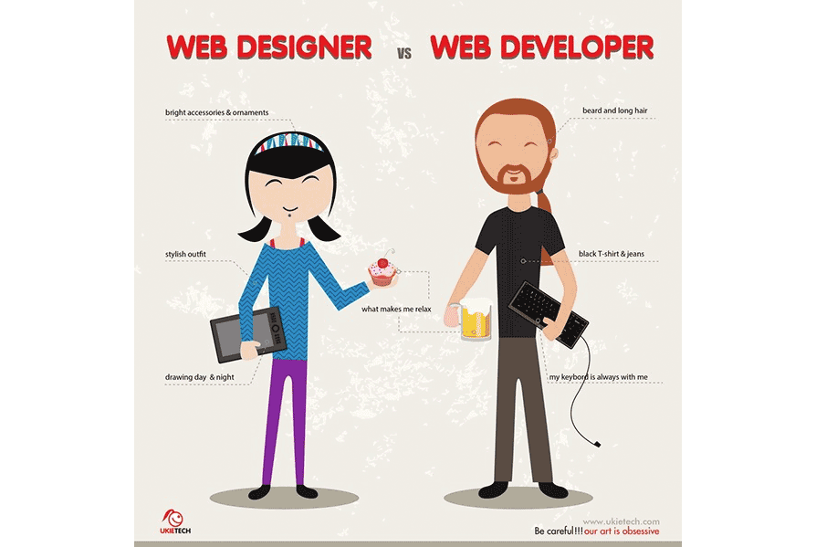
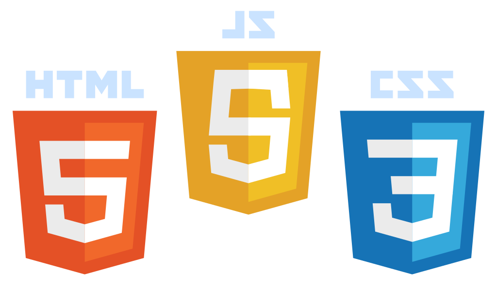
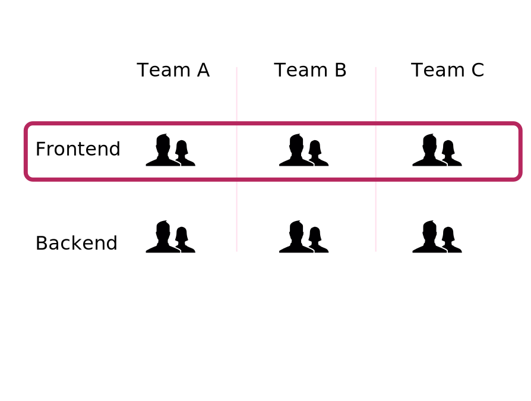
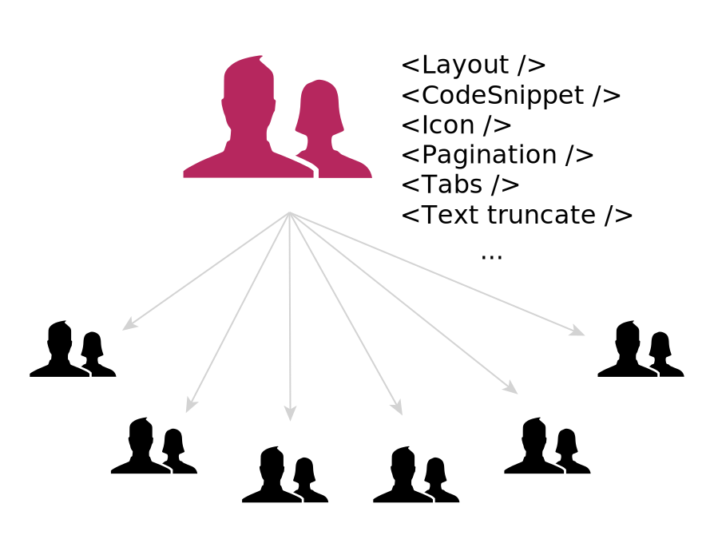
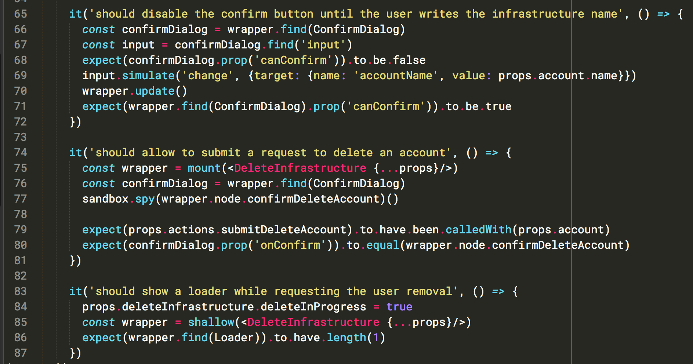
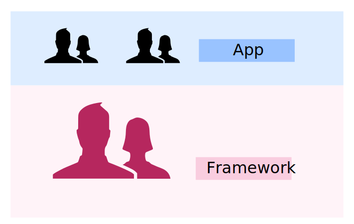

ngBigParty III @ Prague
CSS are for God
by Kevin Purnelle
Engineer at RisingStack in Budapest
twitter: @kevinpur
mail: kevin.purnelle@gmail.com
What is it about?
- Caring more about product than technologies.
- Sharing practices that made our development faster and better while scaling our product. = methodology
- Because CSS are not cared enough.
Quick summary of web development history
New beings appear on earth
They created their own atoms
To create their own world.
They tried to create their own world

Issues we all know
- Cross-browser coherence
- CSS maintenance & conflicts
- Just getting the things done
(eg: vertical (-) align?)
CSS mastering comes with pain. (a lot)
New situations for frontend development
- Parts of app built from independent teams
- Rise of the "fullstack developer"
- Ship "something that works" now (MVP)
quality later -> refactors
Increase difficulty to:
-
scale frontend while maintaining coherence:
- from visual (UX) point of view
- implementation point of view
- produce quality right off the bat.
Monitoring tool for Nodejs microservices infrastructures
https://trace.risingstack.com/
Multiple teams:
- Metrics
- Topology
- Alerting
- Transaction tracking
- Performance
(screencast)
We want to avoid spreading Peter Griffin in every team
What can we do?
Split your code
- App
- Framework
- Abstract CSS, HTML and JS in a box: UI components
- Build a component library = UI framework
- Provide documented components to all developers
- Recognize UI patterns,
recurring problems in your app and extract them (DRY) - Let the atomic level to "God": dedicate time and people to build UI components
What does a UI component do for us?
- separation of concerns
- reusable
- can be unit tested
- clear API
- abstracts presentation (HTML + CSS) & logic (JS)
- encapsulates quality (eg: accessibility)
Example of developer journey: truncate text
- CSS only?
- hum...stack overflow
- make some CSS class (or let's go crazy, make it inline)
overflow: hidden;
text-overflow: ellipsis;
- Does not work...?
- Stack overflow again.
- Ok we need a display: block container and a width
What can we do to achieve more quality?
People dedicated to UI framework
Anyone can use components
What kind of tools do we have?
- Component based libs (eg: React)
- Automatic documentation tools
- Being able to develop components outside of where they would be used. (npm / electron-compile)
Developing components independently
With npm and a private registry
- npm link
- work on the component
- commit and publish
Example: React command palette
with Electron compile (soon)
"electron-compile compiles JS and CSS on the fly with a single call in your app's 'ready' function."
JavaScript ES6/ES7 (via Babel), TypeScript, CoffeeScript
For CSS: Less, Stylus
https://github.com/electron/electron-compile
Pure "render" components as much as possible
The resulting UI is solely the result of its input. (props)
Easy to test. (example with Enzyme from AirBnB)
Adopting principles of functional programming.
Testing a react component
Reusable logic: Higher Order Components
Automatic component documentation
Example: react-styleguidedist
https://github.com/sapegin/react-styleguidist
screencast
Results
-
All the generic UI components are reusable
- We can reuse our framework for another app
- Our "app code" is smaller and focused on business problems.
- Developer experience goes UP!
- Developers can focus their time on actual features
- Quality is "encapsulated" -> less refactors, better UX
- New people starts quickly
- It's actually fun!
Scaling with quality in mind
split generic from business right from the start
Even God can have problems with atoms.
Questions?
Kevin Purnelle @risingstack